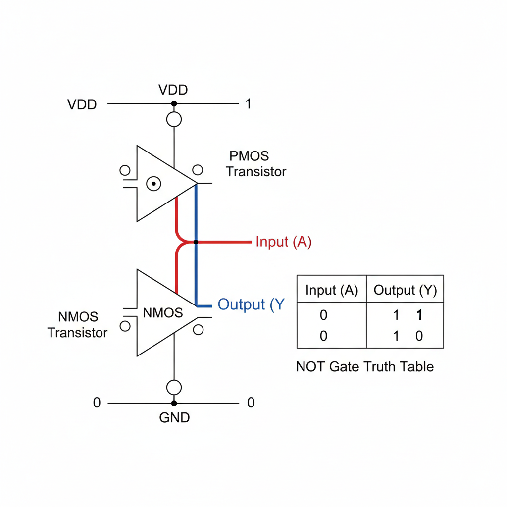
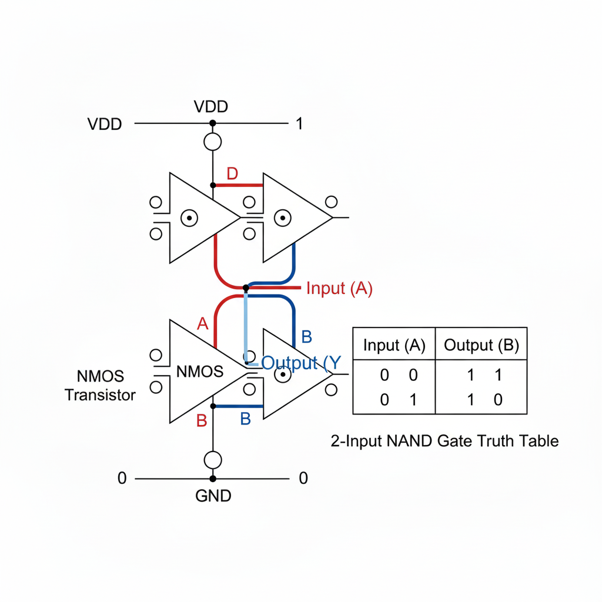
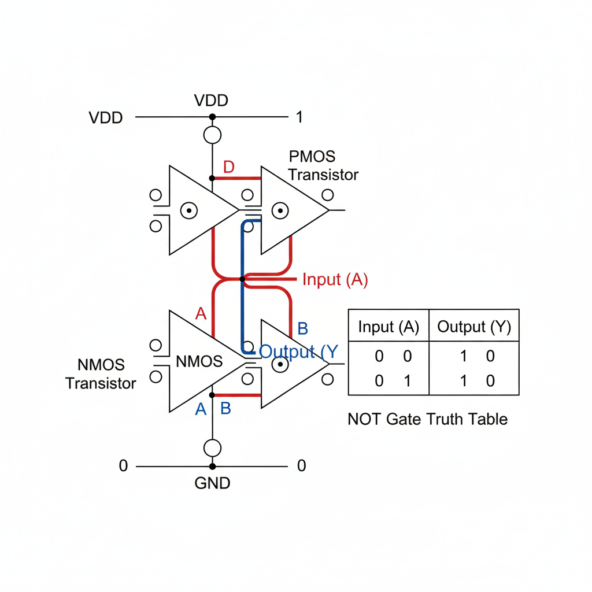
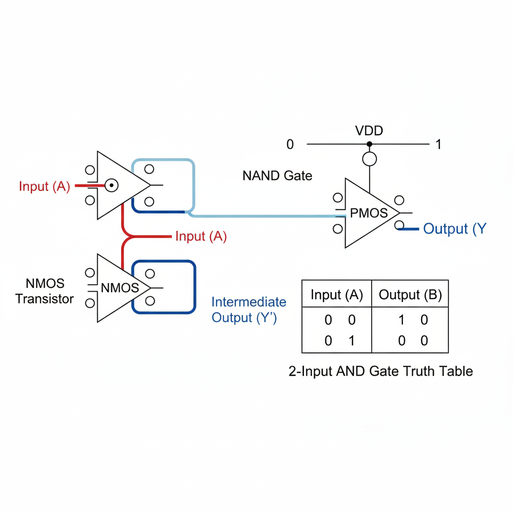
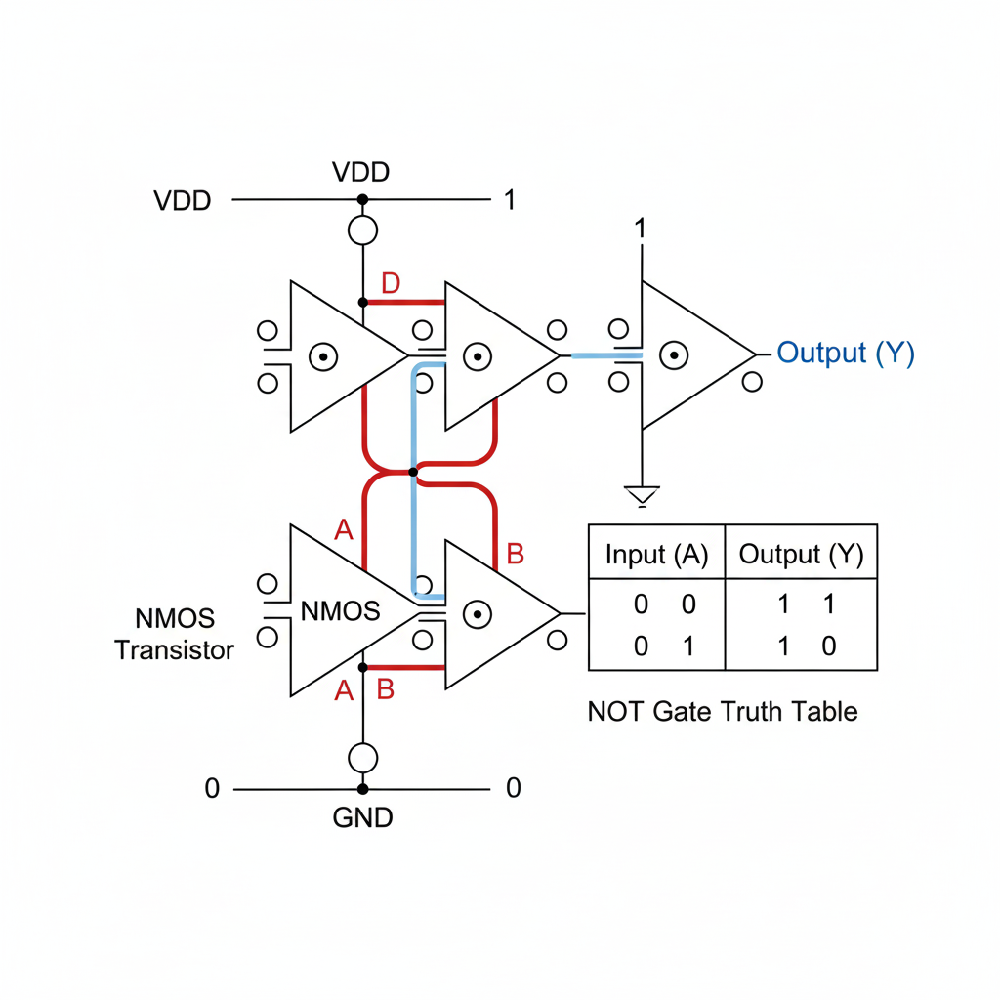

Further Learning: Video Resource
Watch this video to see transistors and logic gates explained visually.
Video Transcript (Placeholder)
[Transcript will go here. This section is designed to be accessible and scrollable.]
Welcome to this module on transistors and logic gates. Today, we'll explore the tiny switches that power all our modern electronics.
A transistor is essentially a semiconductor device that can either amplify an electronic signal or act as a switch. Think of it like a light switch, but instead of your finger, another electrical signal controls it.
There are two main types: BJTs and FETs. BJTs were the first, but FETs, especially MOSFETs, dominate modern digital circuits due to their efficiency.
In a MOSFET, applying a voltage to the 'gate' terminal creates an electrical field that allows current to flow between the 'drain' and 'source' terminals. Remove the voltage, and the current stops. This ON/OFF behavior is perfect for representing the 1s and 0s of digital logic.
Now, let's see how these switches combine to form logic gates. The simplest is the NOT gate, or inverter. If the input is 0, the output is 1. If the input is 1, the output is 0.
Using CMOS technology, which uses both N-type and P-type MOSFETs, we can create very efficient gates. An NMOS transistor turns ON with a high gate voltage, while a PMOS turns ON with a low gate voltage.
For a NOT gate, we use one PMOS and one NMOS. When the input is low, the PMOS turns on, connecting the output to the high voltage (1). When the input is high, the NMOS turns on, connecting the output to ground (0).
Next, let's look at the NAND gate. This gate outputs 0 only if all its inputs are 1. Otherwise, the output is 1.
A 2-input NAND gate uses two PMOS transistors in parallel for the pull-up network and two NMOS transistors in series for the pull-down network. Only when both inputs are high do both NMOS transistors conduct, pulling the output to 0.
Similarly, the NOR gate outputs 1 only if all its inputs are 0. Otherwise, the output is 0.
The 2-input NOR gate has two PMOS transistors in series for the pull-up and two NMOS in parallel for the pull-down. Only when both inputs are low do both PMOS transistors conduct, pulling the output to 1.
We can combine these basic gates to create others. An AND gate is simply a NAND gate followed by a NOT gate. An OR gate is a NOR gate followed by a NOT gate.
These simple transistor-based gates form the very foundation of all digital electronics, from calculators to supercomputers. Understanding them is key to understanding how computers work at a fundamental level.
Thank you for watching this module. Feel free to explore the interactive examples and resources provided on this page to deepen your understanding.
What is a Transistor?
A transistor is a semiconductor device used to amplify or switch electronic signals and electrical power. It is one of the fundamental building blocks of modern electronic devices, often described as a tiny, electronically controlled switch or a faucet that controls the flow of electricity.
Types of Transistors:
- Bipolar Junction Transistors (BJTs): These were among the first transistors. They have three terminals:
- Base (B): The control input. A small current here controls a larger current.
- Collector (C): Where the main current enters.
- Emitter (E): Where the main current leaves.
- Field-Effect Transistors (FETs): More common in modern integrated circuits. They also have three terminals:
- Gate (G): The control input. An electric field here controls the current flow.
- Drain (D): Where the main current enters.
- Source (S): Where the main current leaves.
In digital circuits, transistors primarily function as **switches**: either allowing current to flow ("ON" or logical "1") or blocking it ("OFF" or logical "0").
How a Transistor Works
At its core, a transistor uses a small electrical signal to control a larger one.
For a BJT (NPN type):
When a small current is applied to the Base, it "opens the gate" for a much larger current to flow from the Collector to the Emitter. No current at the Base means the "gate" is closed. This allows it to amplify signals or act as a digital switch.
For a MOSFET (N-channel type):
Applying a voltage to the Gate creates an electric field that forms a conductive channel between the Source and the Drain, allowing current to flow. Without Gate voltage, the channel is non-conductive. This precise control makes MOSFETs ideal for digital logic, as they consume very little power when idle in CMOS (Complementary Metal-Oxide-Semiconductor) configurations.
Simple Logic Gates Using Transistors
Logic gates are the fundamental building blocks of digital circuits, performing basic logical operations on binary inputs (0s and 1s) to produce a single binary output. We'll look at CMOS (Complementary Metal-Oxide-Semiconductor) implementations, which are power-efficient and widely used.
In CMOS:
- NMOS Transistors: Conduct when the gate is high (1), block when the gate is low (0).
- PMOS Transistors: Conduct when the gate is low (0), block when the gate is high (1).
Let "high" (near supply voltage, Vdd) be logical "1" and "low" (near ground, GND) be logical "0".
1. NOT Gate (Inverter)
Inverts the input: 0 becomes 1, and 1 becomes 0.
- Input A is 0 (Low): PMOS ON, NMOS OFF. Output Y is 1 (connected to Vdd).
- Input A is 1 (High): PMOS OFF, NMOS ON. Output Y is 0 (connected to GND).
2. NAND Gate
Output is 0 only if ALL inputs are 1. Otherwise, output is 1.
- Pull-up Network (PMOS in parallel): If A or B (or both) are 0, at least one PMOS turns ON, pulling output to 1.
- Pull-down Network (NMOS in series): Both A and B must be 1 for both NMOS to turn ON, pulling output to 0.
3. NOR Gate
Output is 1 only if ALL inputs are 0. Otherwise, output is 0.
- Pull-up Network (PMOS in series): Both A and B must be 0 for both PMOS to turn ON, pulling output to 1.
- Pull-down Network (NMOS in parallel): If A or B (or both) are 1, at least one NMOS turns ON, pulling output to 0.
4. AND Gate
Output is 1 only if ALL inputs are 1. Can be built by connecting a NAND gate to a NOT gate.
5. OR Gate
Output is 1 if ANY input is 1. Can be built by connecting a NOR gate to a NOT gate.
Interactive NOT Gate Example
Click the button below to simulate the input of a NOT gate and see the resulting output!
Input (A): 0
Output (Y): 1